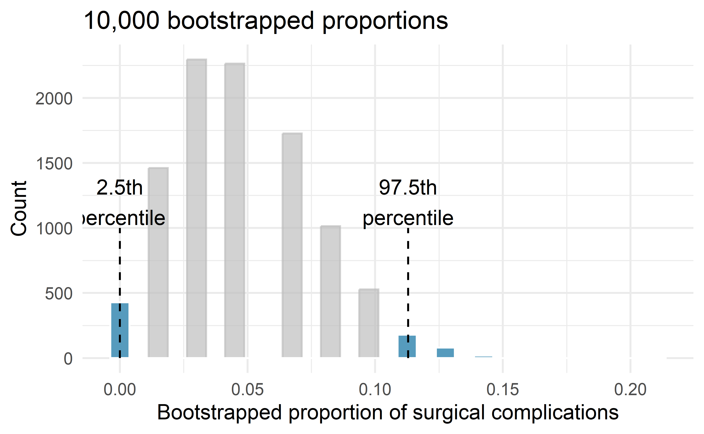

Chapter 10 Confidence intervals with bootstrapping
In this chapter, we expand on the familiar idea of using a sample proportion to estimate a population proportion. That is, we create what is called a confidence interval, which is a range of plausible values where we may find the true population value. The process for creating a confidence interval is based on understanding how a statistic (here the sample proportion) varies around the parameter (here the population proportion) when many different statistics are calculated from many different samples.
If we could, we would measure the variability of the statistics by repeatedly taking sample data from the population and compute the sample proportion. Then we could do it again. And again. And so on until we have a good sense of the variability of our original estimate.
When the variability across the samples is large, we would assume that the original statistic is possibly far from the true population parameter of interest (and the interval estimate will be wide). When the variability across the samples is small, we expect the sample statistic to be close to the true parameter of interest (and the interval estimate will be narrow).
The ideal world where sampling data is free or extremely cheap is almost never the case, and taking repeated samples from a population is usually impossible.
So, instead of using a “resample from the population” approach, bootstrapping uses a “resample from the sample” approach. In this chapter we provide examples and details about the bootstrapping process.
In Chapter 9, we explored how to use simulation methods to model variability in sample statistics under the assumption of a null hypothesis. Sometimes, however, instead of testing a claim, the goal is to estimate the unknown value of a population parameter with a certain degree of certainty.
For example,
- How much less likely am I to get malaria if I get the vaccine?
- How much faster (or slower) can a person tap their finger, on average, if they drink caffeine first?
- What proportion of the vote will go to candidate A?
Here, we explore the situation where the focus is on a single proportion, and we introduce a new simulation method: bootstrapping87.
Bootstrapping is best suited for modeling studies where the data have been generated through random sampling from a population.
As with randomization tests, our goal with bootstrapping is to understand variability of a statistic.
Unlike randomization tests (which modeled how the statistic would change if the treatment had been allocated differently), the bootstrap will model how a statistic varies from one sample to another taken from the population. This will provide information about how different the statistic is from the parameter of interest.
Quantifying the variability of a statistic from sample to sample is a hard problem.
Fortunately, sometimes the mathematical theory for how a statistic varies (across different samples) is well-known; this is the case for the sample proportion as seen in Chapter 11.
However, some statistics do not have simple theory for how they vary, and bootstrapping provides a computational approach for providing interval estimates for almost any population parameter. In this chapter we will focus on bootstrapping to estimate a single proportion, and we will revisit bootstrapping in Chapters 17 through 18, so you’ll get plenty of practice as well as exposure to bootstrapping in many different data settings.
Our goal with bootstrapping will be to produce an interval estimate (a range of plausible values) for the population parameter.
10.1 Case study: Medical consultant
People providing an organ for donation sometimes seek the help of a special medical consultant. These consultants assist the patient in all aspects of the surgery, with the goal of reducing the possibility of complications during the medical procedure and recovery. Patients might choose a consultant based in part on the historical complication rate of the consultant’s clients.
10.1.1 Observed data
One consultant tried to attract patients by noting the average complication rate for liver donor surgeries in the US is about 10%, but her clients have had only 3 complications in the 62 liver donor surgeries she has facilitated. She claims this is strong evidence that her work meaningfully contributes to reducing complications (and therefore she should be hired!).
We will let \(\pi\) represent the true complication rate for liver donors working with this consultant. (The “true” complication rate will be referred to as the parameter.) We estimate \(\pi\) using the data, and label the estimate \(\hat{p}.\)
The sample proportion for the complication rate is 3 complications divided by the 62 surgeries the consultant has worked on: \(\hat{p} = 3/62 = 0.048.\)
Is it possible to assess the consultant’s claim (that the reduction in complications is due to her work) using the data?
No.
The claim is that there is a causal connection, but the data are observational, so we must be on the lookout for confounding variables.
For example, maybe patients who can afford a medical consultant can afford better medical care, which can also lead to a lower complication rate.
While it is not possible to assess the causal claim, it is still possible to understand the consultant’s true rate of complications.
Parameter.
A parameter is the “true” value of interest.
We typically estimate the parameter using a point estimate from a sample of data. The point estimate is also known as the statistic.
For example, we estimate the probability \(\pi\) of a complication for a client of the medical consultant by examining the past complications rates of her clients:
\[\hat{p} = 3 / 62 = 0.048~\text{is used to estimate}~\pi\]
10.1.2 Variability of the statistic
In the medical consultant case study, the parameter is \(\pi,\) the true probability of a complication for a client of the medical consultant. There is no reason to believe that \(\pi\) is exactly \(\hat{p} = 3/62,\) but there is also no reason to believe that \(\pi\) is particularly far from \(\hat{p} = 3/62.\) By sampling with replacement from the dataset (a process called bootstrapping), the variability of the possible \(\hat{p}\) values can be approximated.
Most of the inferential procedures covered in this text are grounded in quantifying how one dataset would differ from another when they are both taken from the same population. It does not make sense to take repeated samples from the same population because if you have the means to take more samples, a larger sample size will benefit you more than separately evaluating two sample of the exact same size. Instead, we measure how the samples behave under an estimate of the population.
Figure 10.1 shows how the unknown original population can be estimated by using the sample to approximate the proportion of successes and failures (in our case, the proportion of complications and no complications for the medical consultant).

Figure 10.1: The unknown population is estimated using the observed sample data. Note that we can use the sample to create an estimated or bootstrapped population from which to sample. The observed data include three red and four white marbles, so the estimated population contains 3/7 red marbles and 4/7 white marbles.
By taking repeated samples from the estimated population, the variability from sample to sample can be observed. In Figure 10.2 the repeated bootstrap samples are obviously different both from each other and from the original population. Recall that the bootstrap samples were taken from the same (estimated) population, and so the differences are due entirely to natural variability in the sampling procedure.

Figure 10.2: Bootstrap sampling provides a measure of the sample to sample variability. Note that we are taking samples from the estimated population that was created from the observed data.
By summarizing each of the bootstrap samples (here, using the sample proportion), we see, directly, the variability of the sample proportion, \(\hat{p},\) from sample to sample. The distribution of \(\hat{p}_{boot}\) for the example scenario is shown in Figure 10.3, and the full bootstrap distribution for the medical consultant data is shown in Figure 10.6.
![The same unknown large population with a sample of 3 red and 4 white marbles; the proxy population which is infinite with 3/7 red marbles; and the k Resamples of size 7 are shown. From each of the resamples the bootstrapped proportion of red is calculated (shown as 2/7, 4/7, and 5/7). Many many resamples are taken and summarized in a dotplot of the bootstrapped proportions. The proportions range from 0/7 to 7/7 in a bell shape with the majority of bootstrapped proportions falling between 1/7 and 6/7.](images/boot1prop3.png)
Figure 10.3: The bootstrapped proportion is estimated for each bootstrap sample. The resulting bootstrap distribution (dotplot) provides a measure for how the proportions vary from sample to sample
It turns out that in practice, it is very difficult for computers to work with an infinite population (with the same proportional breakdown as in the sample). However, there is a physical and computational method which produces an equivalent bootstrap distribution of the sample proportion in a computationally efficient manner.
Consider the observed data to be a bag of marbles 3 of which are success (red) and 4 of which are failures (white). By drawing the marbles out of the bag with replacement, we depict the exact same sampling process as was done with the infinitely large estimated population.

Figure 10.4: Taking repeated resamples from the sample data is the same process as creating an infinitely large estimate of the population. It is computationally more feasible to take resamples directly from the sample. Note that the resampling is now done with replacement (that is, the original sample does not ever change) so that the original sample and estimated hypothetical population are equivalent.
![Top image includes the steps of (1) a large unknown population, (2) observed sample of size 7 (with 3 red and 4 white), (3) creation of an infinitely large proxy population, and (4) three resamples. (5) Many resamples are considered with a dotplot of bootstrapped proportions. The bottom image follows the same process without the infinitely large proxy population. That is, in the bottom image a (1) single sample is taken from the original population and (2) the three resamples are taken directly from the observed data (using sampling with replacement). (3) Again, many resamples are considered with a dotplot of bootstrapped proportions.](images/boot1propboth.png)
Figure 10.5: A comparison of the process of sampling from the estimate infinite population and resampling with replacement from the original sample. Note that the dotplot of bootstrapped proportions is the same because the process by which the statistics were estimated is equivalent.
If we apply the bootstrap sampling process to the medical consultant example, we consider each client to be one of the marbles in the bag. There will be 59 white marbles (no complication) and 3 red marbles (complication). If we choose 62 marbles out of the bag (one at a time with replacement) and compute the proportion of simulated patients with complications, \(\hat{p}_{boot},\) then this “bootstrap” proportion represents a single simulated proportion from the “resample from the sample” approach.
In a simulation of 62 patients, about how many would we expect to have had a complication? Why?88
One simulation isn’t enough to get a sense of the variability from one bootstrap proportion to another bootstrap proportion, so we repeat the simulation 10,000 times using a computer.
Figure 10.6 shows the distribution from the 10,000 bootstrap simulations. The bootstrapped proportions vary from about zero to 11.3%. The variability in the bootstrapped proportions leads us to believe that the true probability of complication (the parameter, \(\pi\)) is likely to fall somewhere between 0 and 11.3%, as these numbers capture 95% of the bootstrap resampled values.
The range of values for the true proportion is called a bootstrap percentile confidence interval, and we will see it again throughout the next few sections and chapters.

Figure 10.6: The original medical consultant data is bootstrapped 10,000 times. Each simulation creates a sample from the original data where the probability of a complication is \(\hat{p} = 3/62.\) The bootstrap 2.5 percentile proportion is 0 and the 97.5 percentile is 0.113. The result is: we are 95% confident that, in the population, the true probability of a complication is between 0% and 11.3%.
The original claim was that the consultant’s true rate of complication was under the national rate of 10%. Does the interval estimate of 0 to 11.3% for the true probability of complication indicate that the surgical consultant has a lower rate of complications than the national average? Explain.
No. Because the interval overlaps 10%, it might be that the consultant’s work is associated with a lower risk of complications, or it might be that the consultant’s work is associated with a higher risk (i.e., greater than 10%) of complications! Additionally, as previously mentioned, because this is an observational study, even if an association can be measured, there is no evidence that the consultant’s work is the cause of the complication rate (being higher or lower).
10.2 Confidence intervals
A point estimate provides a single plausible value for a parameter. However, a point estimate is rarely perfect—usually there is some error in the estimate. In addition to supplying a point estimate of a parameter, a next logical step would be to provide a plausible range of values for the parameter.
10.2.1 Plausible range of values for the population parameter
A plausible range of values for the population parameter is called a confidence interval. Using only a single point estimate is like fishing in a murky lake with a spear, and using a confidence interval is like fishing with a net. We can throw a spear where we saw a fish, but we will probably miss. On the other hand, if we toss a net in that area, we have a good chance of catching the fish.
If we report a point estimate, we probably will not hit the exact population parameter. On the other hand, if we report a range of plausible values—a confidence interval—we have a good shot at capturing the parameter.
This reasoning also explains why we can never prove a null hypothesis. Sample statistics will vary from sample to sample. While we can quantify this uncertainty (e.g., we are 95% sure the statistic will fall within 0.15 of the parameter), we can never be certain that the parameter is an exact value. For example, suppose you want to test whether a coin is a fair coin, i.e., \(H_0: \pi = 0.50\) versus \(H_0: \pi \neq 0.50\), so you toss the coin 10 times to collect data. In those 10 tosses, 6 land on heads and 4 land on tails, resulting in a p-value of 0.75489. We don’t have enough evidence to show that the coin is biased, but surely we wouldn’t say we just proved the coin is fair!
If we want to be very certain we capture the population parameter, should we use a wider interval (e.g., 99%) or a smaller interval (e.g., 80%)?90
10.2.2 Bootstrap confidence interval
As we saw above, a bootstrap sample is a sample of the original sample. In the case of the medical complications data, we proceed as follows:
- Randomly sample one observation from the 62 patients (replace the marble back into the bag so as to keep the population constant).
- Randomly sample a second observation from the 62 patients. Because we sample with replacement (i.e., we do not actually remove the marbles from the bag), there is a 1-in-62 chance that the second observation will be the same one sampled in the first step!
- Keep going one sampled observation at a time …
- Randomly sample the 62nd observation from the 62 patients.
Bootstrap sampling is often called sampling with replacement.
A bootstrap sample behaves similarly to how an actual sample from a population would behave, and we compute the point estimate of interest (here, compute \(\hat{p}_{boot}\)).
Due to theory that is beyond this text, we know that the bootstrap proportions \(\hat{p}_{boot}\) vary around \(\hat{p}\) in a similar way to how different sample proportions (i.e., values of \(\hat{p}\)) vary around the true parameter \(\pi.\)
Therefore, an interval estimate for \(\pi\) can be produced using the \(\hat{p}_{boot}\) values themselves.
95% Bootstrap percentile confidence interval for a parameter \(\pi.\)
The 95% bootstrap confidence interval for the parameter \(\pi\) can be obtained directly using the ordered values \(\hat{p}_{boot}\) values — the bootstrapped sample proportions. Consider the sorted \(\hat{p}_{boot}\) values, and let \(\hat{p}_{boot, 0.025}\) be the 2.5th percentile value and \(\hat{p}_{boot, 0.975}\) be the 97.5th percentile. The 95% confidence interval is given by:
In Section 14.3 we will discuss different percentages for the confidence level (e.g., 90% confidence interval or 99% confidence interval).
Section 14.3 also provides a longer discussion on what “95% confidence” actually means.
10.3 Chapter review
- A simulation-based confidence interval takes percentiles of a bootstrap distribution of sample statistics as its endpoints. For example, a 95% confidence interval is the interval from the 2.5th percentile to the 97.5th percentile — those percentiles that capture the middle 95% of the bootstrap distribution.
Terms
We introduced the following terms in the chapter. If you’re not sure what some of these terms mean, we recommend you go back in the text and review their definitions. We are purposefully presenting them in alphabetical order, instead of in order of appearance, so they will be a little more challenging to locate. However you should be able to easily spot them as bolded text.
| bootstrapping |
If you’re curious where the term “bootstrapping” comes from, it comes from the phrase “lift yourself up by your own bootstraps.” Lifting yourself up by your own bootstraps is analogous to creating more samples from the single original sample.↩︎
About 4.8% of the patients (3 on average) in the simulation will have a complication, as this is what was seen in the sample. We will, however, see a little variation from one simulation to the next.↩︎
You will get more practice calculating p-values such as these in Chapter 14.↩︎
If we want to be more certain we will capture the fish, we might use a wider net. Likewise, we use a wider confidence interval if we want to be more certain that we capture the parameter.↩︎